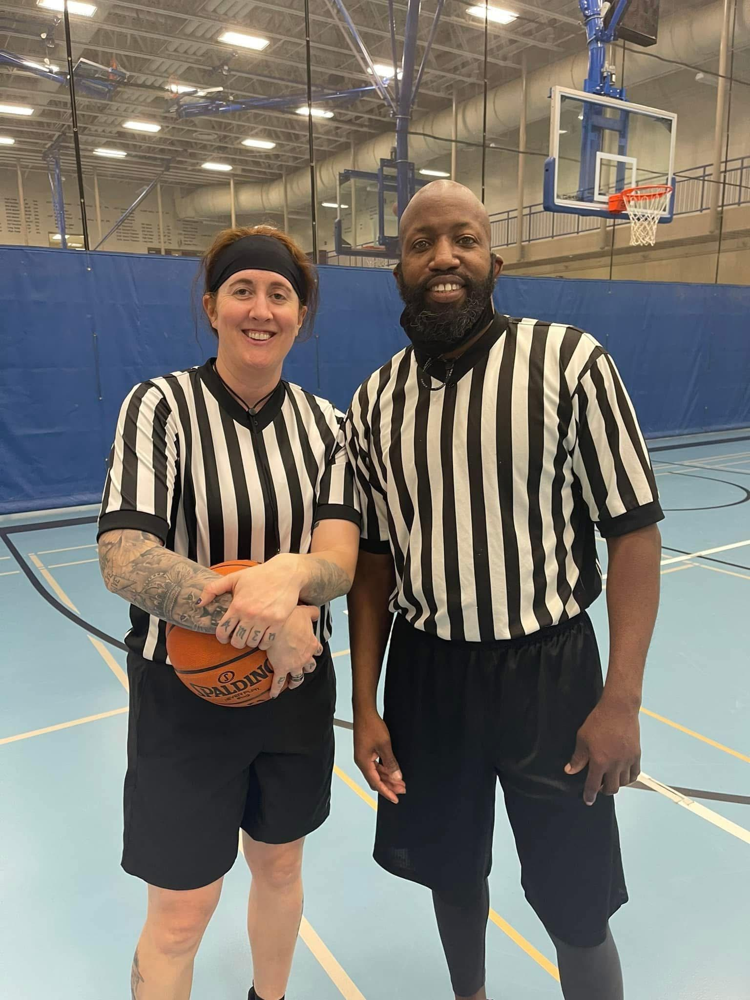
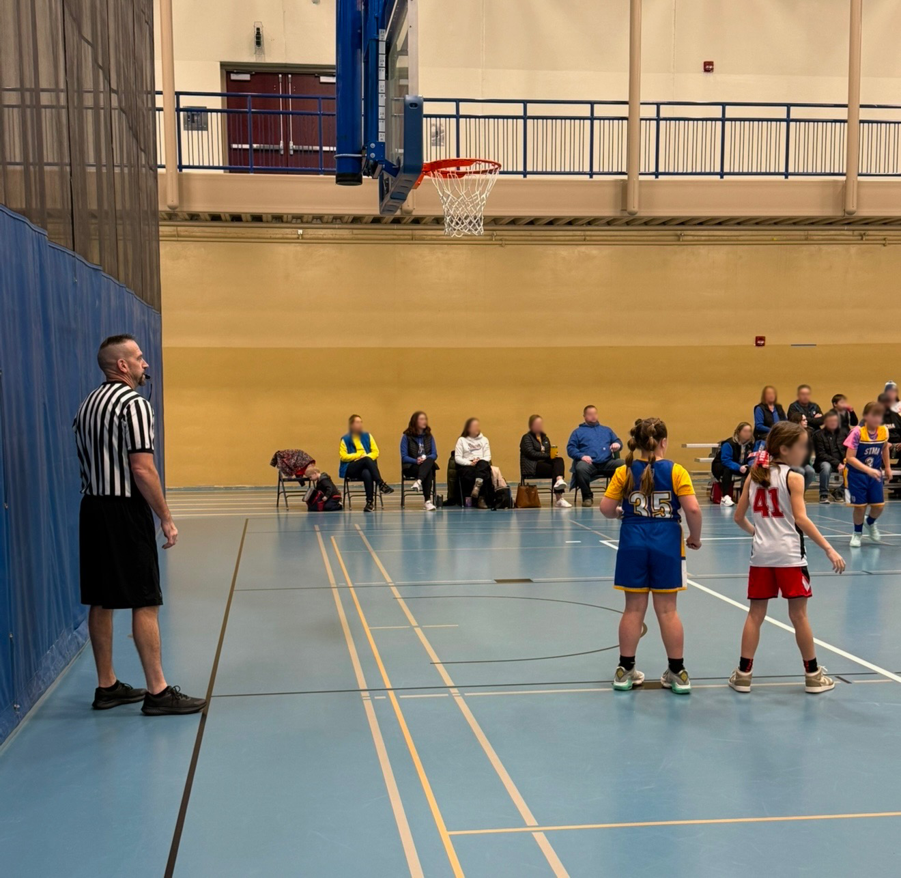
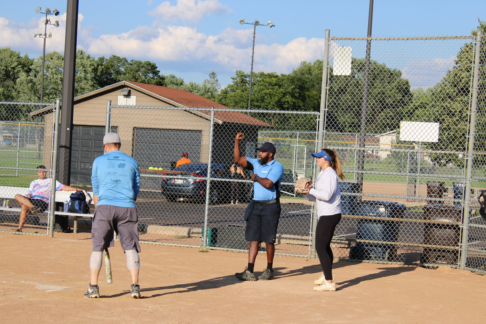

Welcome to Hammer Sports Officials
Professional, reliable officiating support for schools, leagues, and tournaments.




Welcome to Hammer Sports Officials, your trusted source for professional and reliable officiating. We specialize in assigning certified, well-trained officials to a wide range of sporting events, including youth, high school, and adult recreational leagues. Our organization is founded on the principles of integrity, expertise, and a deep respect for the spirit of competition. We are dedicated to ensuring that every game is managed with the highest level of professionalism and skill.
Our mission is two-fold: to elevate the quality of sports officiating and to provide seamless, dependable service to the athletic community. For our officials, we offer comprehensive training, ongoing development, and a supportive network to help them excel in their craft.
For the schools and organizations we partner with, we are committed to delivering officials who are not only masters of the rules but who also embody fairness, decisiveness, and control, ensuring a safe and positive environment for every athlete, coach, and fan.
Whether you are an experienced official seeking new opportunities, an individual aspiring to join the officiating ranks, or a league director in need of top-tier officiating services, Hammer Sports Officials is your dedicated partner. We are committed to upholding the integrity of the game, one call at a time.
The sports we currently cover include volleyball, basketball, flag football, tackle football, slow-pitch softball, kickball, baseball, and soccer. We are also interested in covering other sports, so please reach out if you have other sports you are interested in.